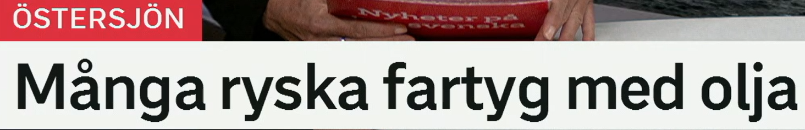
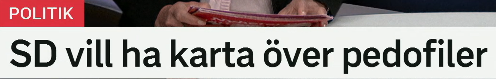
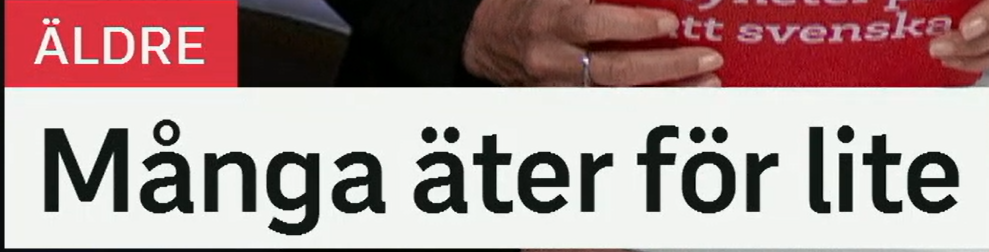
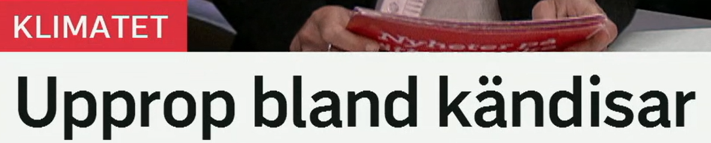
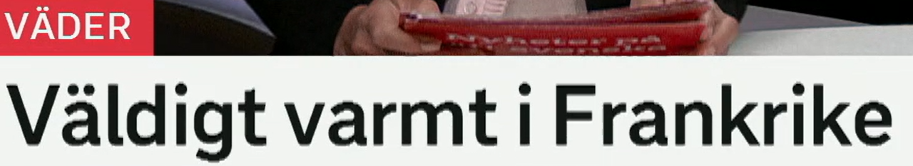

Många ryska fartyg med olja
许多装有石油的俄罗斯船只。
1. fartyg = 船只、舰船
- ett fartyg：一艘船，较正式，新闻常用
- en båt：船，日常口语更常见
- ett oljefartyg：油轮、载油船
- ett lastfartyg：货船
2. ryska / olja
- rysk：俄罗斯的，基本形
- ryska fartyg：俄罗斯船只，复数形式
- olja：石油、油
- råolja：原油；oljeexport：石油出口
Många fartyg passerar genom Östersjön. 许多船只经过波罗的海。
Fartygen transporterar olja till andra länder. 这些船把石油运往其他国家。
Myndigheterna följer ryska oljefartyg. 当局正在跟踪俄罗斯油船。

SD vill ha karta över pedofiler
瑞典民主党想要一张关于恋童癖者的地图。
1. vill ha = 想要
- vilja：想要，原形
- vill ha：想要得到某物
- kräva：要求，语气更强
- föreslå：提出建议、提议
2. karta över = 关于……的地图
- en karta：一张地图
- en karta över Sverige：瑞典地图
- en lista över namn：姓名列表
- en översikt över läget：局势概览
Partiet vill ha en ny lag. 该党想要一项新法律。
SD föreslår en karta över dömda personer. SD 提议制作一张关于已判刑人员的地图。
Förslaget får kritik från flera håll. 该提案受到多方批评。

Många äter för lite
许多人吃得太少。
1. äta = 吃
- äter：吃，现在时
- äta mat：吃饭、吃食物
- få i sig mat：摄入食物，健康语境常用
- näring：营养
2. för lite = 太少
- för lite：太少，带负面结果
- lite：少、一点
- för mycket：太多
- tillräckligt：足够地、足够多
Många äldre äter för lite. 许多老人吃得太少。
Patienterna får inte i sig tillräckligt med näring. 病人没有摄入足够营养。
För lite mat kan leda till sämre hälsa. 食物太少可能导致健康变差。

Upprop bland kändisar
名人之间发起呼吁。
1. upprop = 呼吁、联名倡议
- ett upprop：呼吁、倡议书
- en namninsamling：签名请愿
- en kampanj：运动、宣传活动
- en vädjan：恳求、呼吁，语气更柔和
2. bland kändisar
- bland：在……之中
- kändis：名人，口语
- offentlig person：公众人物，正式些
- skriva under：签署、联署
Flera kändisar skriver under ett upprop. 多位名人签署一份倡议书。
Uppropet handlar om klimatet. 这份呼吁涉及气候问题。
Kampanjen får stöd av många offentliga personer. 这场运动得到许多公众人物支持。

Väldigt varmt i Frankrike
法国非常炎热。
1. väldigt = 非常
- väldigt varmt：非常热
- mycket varmt：很热，新闻里也常见
- extremt varmt：极端炎热
- ovanligt varmt：异常温暖/炎热
2. varmt / värme
- varm：热的、暖的
- varmt：中性形或副词用法
- värme：热、热天气
- värmebölja：热浪
Det är väldigt varmt i Frankrike. 法国非常热。
En värmebölja drar in över landet. 一股热浪进入该国。
Temperaturen kan nå 40 grader. 气温可能达到 40 度。
今日词汇扩展表
这张表把今天的关键词整理成“标题词 - 近义词 - 高频搭配”，方便二次复习。
| 标题词 | 同义词/相关词 | 高频搭配 |
|---|---|---|
| fartyg | båt, skepp, oljefartyg, lastfartyg | ryska fartyg, fartyg med olja, transportera olja |
| vill ha | kräva, föreslå, efterlysa, vilja införa | vill ha karta, kräver ny lag, föreslår register |
| över | om, gällande, som visar, med uppgifter om | karta över, lista över, statistik över, rapport över |
| för lite | inte tillräckligt, brist på, otillräckligt | äter för lite, får i sig för lite, för lite näring |
| upprop | namninsamling, kampanj, vädjan, krav | skriva under upprop, starta upprop, upprop bland kändisar |
| väldigt varmt | mycket varmt, extremt varmt, hett, rekordvarmt | väldigt varmt i, värmebölja, temperaturen stiger |
练习 1
把“许多船只运送石油”译成瑞典语。提示：Många fartyg transporterar olja.
练习 2
用 vill ha 写“该党想要一项新法律”。提示：Partiet vill ha en ny lag.
练习 3
用 för lite 写“许多老人摄入太少营养”。提示：Många äldre får i sig för lite näring.
练习 4
把“法国非常热”扩成完整句。提示：Det är väldigt varmt i Frankrike.